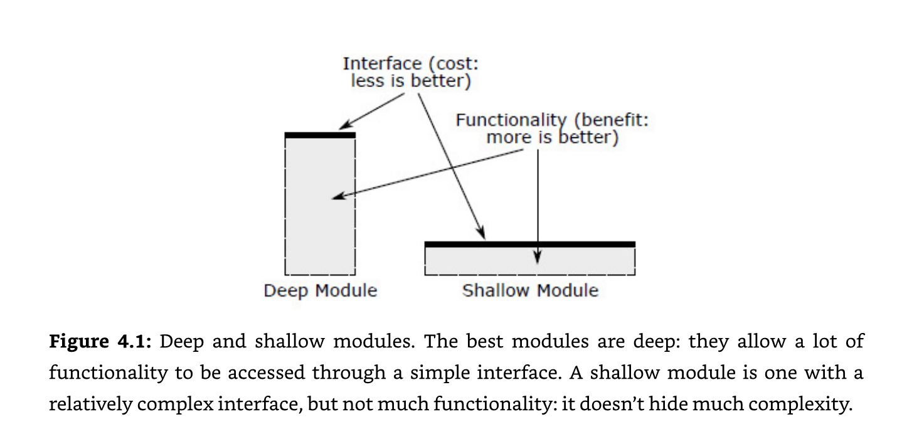

6 Creating a package
6.1 Software specification
So you want to create a new package for DARWIN. The first question to ask is “What is the responsibility of this package and why does it not fit into an existing DARWIN package?” Each DARWIN package represents a set responsibilities and exports the required necessary to meet those responsibilities. Once you have a clear idea of the package responsibility and believe the functionality needs to be separated from other packages the next set is to create the interface. In R the interface will be a collection of functions that work together to solve the problem. R packages can also have data embedded in them so also consider what data your package should export. Aim for a narrow interface that supports deeper functionality instead of a wide interface that supports shallow functionality. 
Figure from “A Philosophy Of Software Design” by John Ousterhout
This does not mean that your package should export one function that does everything. On the contrary it is about what information can be hidden behind the interface that the user never needs to know about. The more information that can be hidden from the user of the interface, the narrower the interface needs to be. Wrapper functions that primarily pass data around tend to be shallow.
Divide what your package needs to do into three categories:
calculations
actions
data
Calculations refer to so called “pure” functions that take some input and return a value. They do not modify the external state at all and have no side effects. Most of your functions should be calculations because they make code safer and easier to reason about. Given the same input a calculation will always return the same output. It does not matter when or how many times a calculation runs.
Actions are functions with side effects. They change the external world in some observable way such as saving a file, creating a new table in a database, updating a database table, printing a value, displaying a plot, changing a global option or environment variable. Your package will need actions but they should be separate from calculations.
Data are inert. Data does not need to do anything which makes it much simpler than calculations or actions. Include inert data that your package needs with usethis::use_data(iris, internal = FALSE). Data can be internal or exported from the package.
Reference “Grokking Simplicity” by Eric Normand
A specification or a blueprint is simply a document that describes what the package does. It should describe the interface and the functionality. It does not describe how the package works. It also does not need to be formal. For R packages we can think of the package manual, function interface documentation, and vignettes as the specification of the software.
6.2 Test plan
As much as possible strive to test all functionality that is added to the code base. This can be difficult because much of DARWIN code is designed to run on remote databases. There will be databases set up to use for testing functionality that requires a remote database. Tests should run quickly if at all possible so that we can all run tests very frequently during development.
6.3 Prototyping
If a picture is worth 1000 words, a prototype is worth a 1000 meetings
IDEO
“The Pragmatic Programmer” describes a concept called tracer bullets. These are working prototypes that mimic the real implementation as much as possible with minimal effort. They are working code examples that could grow into a full solution: a “bare bones” implementation. They give the programmer rapid feedback on an idea.
6.4 An empty package
usethis and devtools
6.5 Adding features with test driven development
6.6 Documentation
The faintest ink is more powerful than the strongest memory
Documentation is just as important as the working code. As mentioned before the package manual and vignettes are the specification of the software. Vignettes should contain working code examples that should be rebuilt before each release so that they are up to date.
6.7 Seeking feedback
“Our highest priority is to satisfy the customer through early and continuous delivery of valuable software”
Agile manifesto
Software is never complete and needs to be designed to change in response to user needs. “Soft” in software is meant to imply “easy to change”. Changing software in response to feedback from users and other developers is important to the success of DARWIN software.
User review is the process of requesting input from one or more potential users of your software.
Code review involves having another developer review your code, make comments, and suggest changes.